What the system had to do
The earlier version used a general lifestyle look that did not immediately say pest control and cleaning, and booking was spread across separate pages. This version is built around one question customers arrive with: what pest or cleaning problem do I have, and how fast can someone deal with it?
Obvious at a glance
The home page opens with "Pest control and cleaning for homes and businesses" and a picker of pests and cleaning types, each with its own icon.
Booking in four steps
Service, property, date and contact, check and send. Links from any pest or clean pre-fill the first step.
Sign-in that never loses work
Visitors create an account or log in inside the last step. Answers survive refreshes, and one button signs in and sends.
Customers stay informed
Reference number, status timeline, confirmed date, a note on how to prepare, and messages with 4Guard.
One screen for the owner
Waiting, today's and confirmed jobs; search; confirm with date and note; reply; publish reviews; book for phone customers.
Secure and low cost
Hashed passwords, protected sessions, server-side permissions and security headers, all on Cloudflare's free tier.
Screens
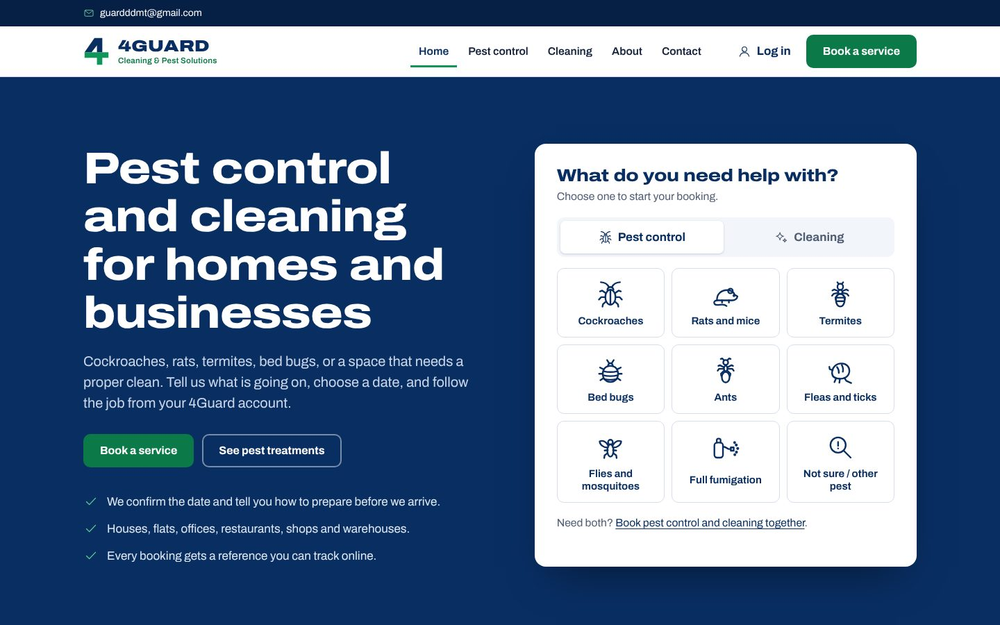
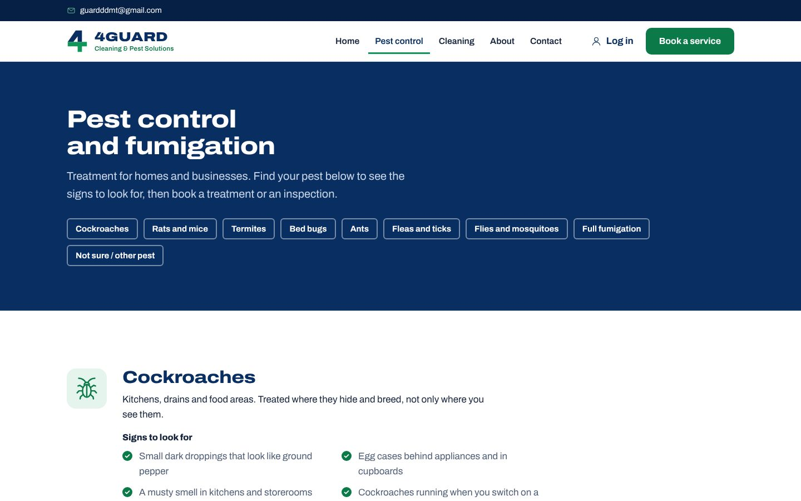
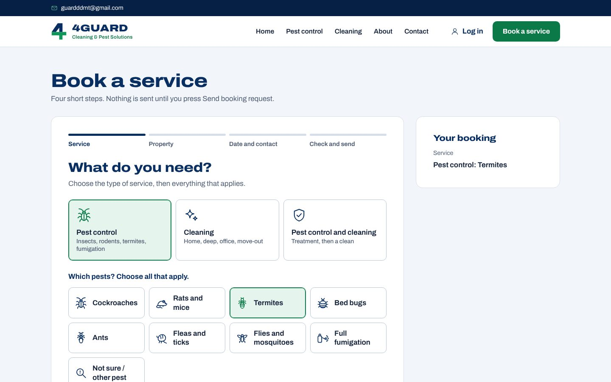
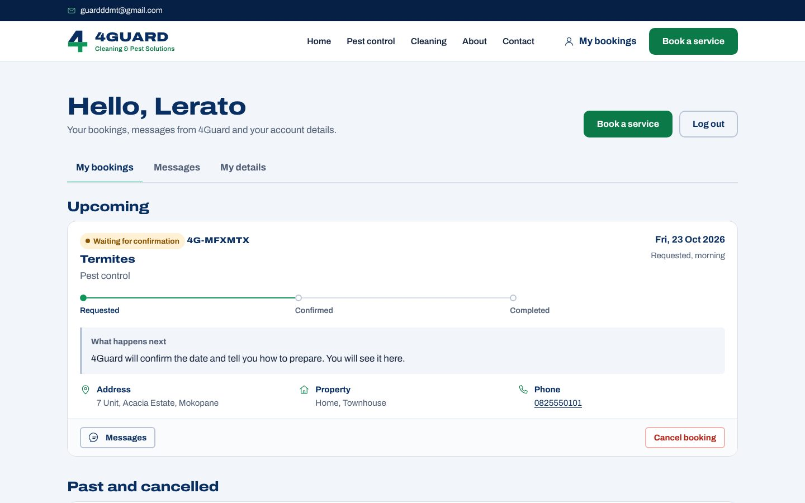
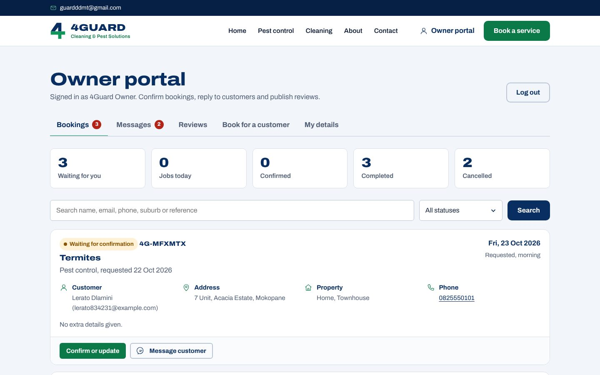
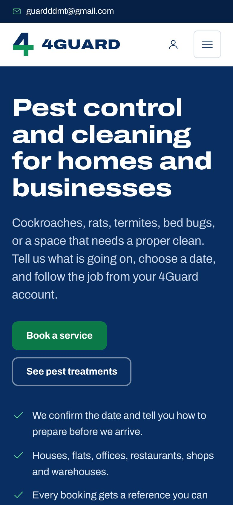
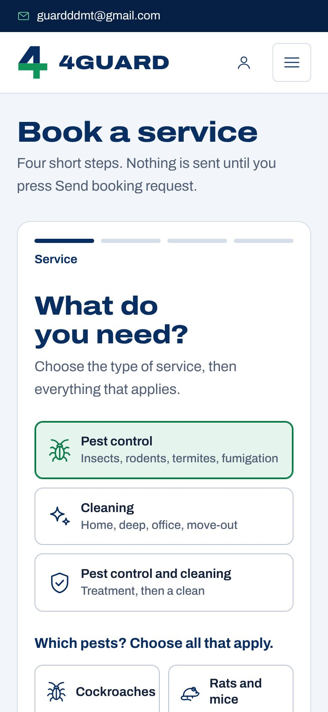
Architecture
The whole system is one Cloudflare Workers project. Static pages are served straight from Cloudflare's edge; only requests to /api/* run code. Data lives in Cloudflare D1, a SQLite database. One shared file, catalog.js, lists every service so the booking form and the server always agree.
Pages and journeys
Every service page leads to booking, and booking leads to the account page where the job is tracked. The same account page shows a customer view or the owner view depending on who signs in.
| Page | Address | Purpose |
|---|---|---|
| Home | / | Headline, service picker, pests and cleaning, how booking works, reviews |
| Pest control | /pest-control | Each pest with signs to look for, booking buttons, preparation FAQ |
| Cleaning | /cleaning | Each type of clean with what it usually includes |
| About, Contact | /about, /contact | Company story; contact details and question form |
| Book a service | /booking | Four-step booking with sign-in inside the form |
| Log in | /login | Log in or create an account |
| Account | /dashboard | Customer or owner view |
Data model
Six tables. Bookings belong to a customer account, can have many messages and at most one review. Passwords and session tokens are only ever stored as hashes.
Booking lifecycle
Every booking moves through clear states. Confirming requires a date, a time of day and a note to the customer, so nobody is left guessing how to prepare.
| Status | Meaning |
|---|---|
| Waiting for confirmation | Request received; 4Guard has not confirmed yet |
| Confirmed | Date, time of day and preparation note set |
| Completed | Job done; the customer can leave a review |
| Cancelled | By the customer (with optional reason) or by 4Guard |
How a booking flows through the system
From tapping a pest on the home page to the owner confirming and replying.
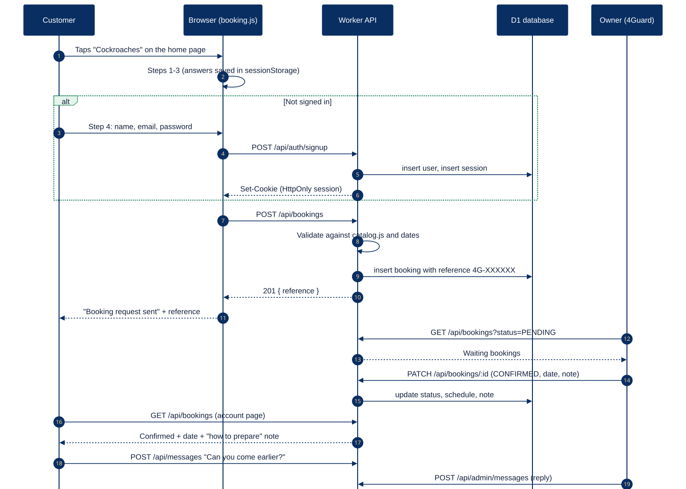
Security
| Risk | Protection |
|---|---|
| Leaked password database | PBKDF2-SHA256, 100,000 rounds, unique salt per account |
| Stolen sessions | Random token in an HttpOnly, Secure, SameSite cookie; only its hash is stored |
| Password guessing | 8 wrong attempts locks that email for 15 minutes |
| Claiming the owner account | The owner email needs a private setup key to register |
| Seeing other customers' data | Every query is filtered on the server by the signed-in account |
| Forged requests from other sites | SameSite cookie and an Origin check on every change |
| Script injection and framing | Strict Content-Security-Policy, X-Frame-Options, escaped output |
Project structure
4GUARD/ ├── README.md Setup, deployment and owner guide ├── wrangler.toml Cloudflare: Worker, static assets, D1 database, migrations ├── package.json npm run dev | db:migrate:local | db:migrate:remote | deploy ├── .dev.vars.example Local secrets template ├── migrations/ Database changes, applied in order │ ├── 0001_initial.sql │ └── 0002_bookings_v2.sql ├── src/ Worker API (server) │ ├── index.js Route table, origin check, errors │ ├── lib/http.js Responses, parsing, validation helpers │ ├── lib/auth.js Passwords, sessions, roles, throttling │ └── routes/ auth.js, bookings.js, messages.js, reviews.js, health.js ├── public/ Website │ ├── index.html pest-control.html cleaning.html about.html contact.html │ ├── booking.html login.html dashboard.html 404.html │ ├── _headers _redirects │ └── assets/ │ ├── css/styles.css │ ├── fonts/ Archivo (self-hosted) │ ├── img/ 4Guard logo and marks, icons.svg, Neuropulse logo │ └── js/ config.js, catalog.js, api.js, site.js, home.js, │ booking.js, login.js, dashboard.js, contact.js └── docs/ This page, SYSTEM_DESIGN.md, diagrams/, screens/
Design system
Colours come from the 4Guard logo. A single typeface, Archivo, is used at two widths: wide and heavy for headings, like the lettering on a service vehicle, and normal width for reading. Custom icons for each pest and type of clean replace stock photography, so the site is instantly recognisable as pest control and cleaning.
Technology
| Part | Choice | Why |
|---|---|---|
| Hosting | Cloudflare Workers + Static Assets | Fast everywhere, HTTPS included, free tier covers a small business |
| Database | Cloudflare D1 (SQLite) | Managed, backed up by Cloudflare, versioned migrations |
| Server code | Plain JavaScript modules | No framework to update; easy for any developer to maintain |
| Website | HTML, CSS, JavaScript modules | No build step; pages load quickly and work on any device |
| Diagrams | Mermaid (docs/diagrams/*.mmd) | Text files that can be edited and re-drawn |